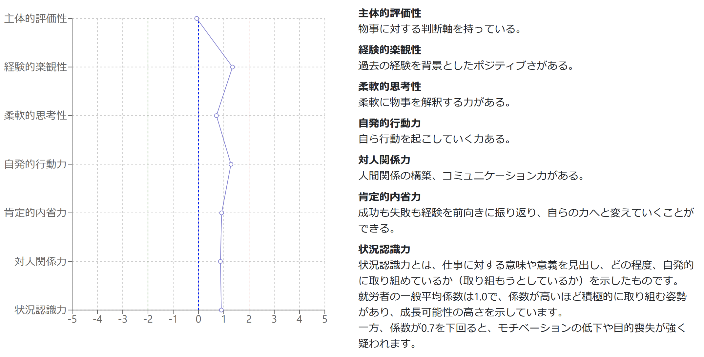

費用をかけて就活サイトに求人を掲載
スカウトメールの送信・フォローにかなりの工数をかけた
しかし、実績になかなか繋がらない
インターンシップは実施したい。しかし、ノウハウや人材が不足している
採用担当者様のお悩みを解消したいという想いから
Career Worq Cafeの新卒紹介サービスは始まりました。
リスクを最小限に抑える完全成果報酬を採用し、
選考から入社まで採用活動を徹底サポートいたします。
Point１
採用にかかる時間短縮
キャリアアドバイザーが学生の経験値の深堀り、強み弱みの把握、業界研究からキャリアビジョンに至るまで直接面談を何度も重ねサポートをします。学生一人一人と丁寧に向き合う事により、企業ニーズに合ったご紹介をしています。
Point2
面接に集中できる徹底したサポート体制
面接日の設定、学生の志望度や所感のヒアリングまでキャリアアドバイザーがサポート致します。また、学生と密にコミュニケーションを取っているからこそ分かるリアルな情報も逐一お伝えしています。
Point3
サポート出来る業種や規模は関係なし
意欲ある学生が沢山集まるCareer Worq Cafeだからこそ、求めている人材と高確率で巡り会うことが出来ます。そして、私たちは学生に向けて御社の魅力をしっかりお伝えするため、採用成功の確率を確実に上げています。

Career Worq Cafeは大学3年生が内定を獲得するまで、長期的支援を行う
人材育成型の人材紹介会社です。
〜学生の就職活動での流れに合わせた豊富なサービス提供〜
自己分析
キャリアインサイト…能力、興味、価値観、行動特性をもとにした適性診断
業界分析
業界・職種分析講座…業界研究、職種研修の仕方や、何がそこで求められているか学ぶ講座
面接対策
面接練習講座…現役採用面接官による、エントリーシート添削とリアルな面接練習を実施
イベント・セミナー
トップビジネスパーソンセミナー…最前線で活躍するビジネスパーソンの講義
大学3年生向け
1.
インターンシップ実施をワンストップで支援
御社の人事担当者にCareer Worq Cafeへお越しいただき、1日で御社ならびに業界の魅力をお伝えしていただきます。企画・集客・学生情報のお渡しを弊社が行うため、無駄な時間をかけずに早期アプローチを可能にします。
Case1: Career Worq Cafeで簡易説明会をする場合
■スケジュール
1日目 プレインターンガイダンス 10時～15時
2日目 企業インターンシップ① 10時〜15時
3日目 企業インターンシップ② 10時〜15時
4日目 企業インターンシップ③ 10時〜15時
5日目 業界研究、就活準備まとめ 10時～15時
Case2: 御社でインターンシップを行うため、集客のみ任せたい場合
その旨、お気軽にお問い合わせください。
●企業参加料金 ※参加学生リストのお渡し含む
10万円/回
大学4年生向け
2.
高精度なマッチングシステムを採用
メンタルタフネステスト＋ キャリアアドバイザーからのサポートで採用活動をご支援します。
複数の企業産業医と協同開発したストレス耐性テストを元に、客観的な数値から学生の潜在的な能力を可視化してデータとして提供いたします。49の設問から算出されたデータの傾向を元に、マッチングミスのないベストな採用を実現します。
